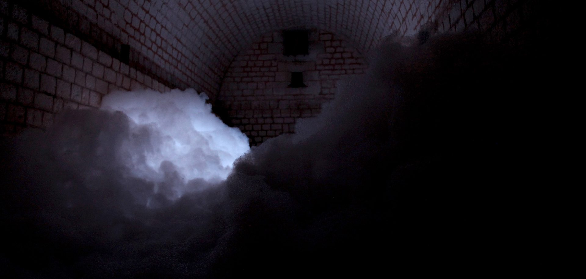

Gallery


(à) partir - Thibaut Le Maguer


Dyew - Djeff
Dyew - Djeff
More projects using ossia:
- tangibleFlux φ plenumorphic ∴ chaosmosis – Navid Navab – score with Max, ossia and Jamoma
- ParOral, Georges Gagneré – didascalie.net – score with SuperCollider + Unity/Unreal Engine
- L’Arbre intégral, Le Poème en Volume – (score with Reaper, Live, Unity3D, + un smartphone android)
- pianotronics #3 – Alain Bonardi – score
- Le Chant des Nanos – Collectif Genre, SCRIME / IdEx Arts et Sciences – score with Max4Live +Modul8
- L’Aveuglement, Cie Contour Progressif : (ossia-pd and score)
- (à) partir, (score, ossia-pd, ofxossia)
- AdAstra, Djeff (score)
- Cie IKARI : shapeOfLight et Matiere (ongoing production) and (oncoming) Ascension : (score and ofxOssia)
- Cie Princess Leopold : Voyage Voyage (score and ofxOssia)
- Louxor Spectacle : Immersion – floating projection (score and ofxOssia)
- Félicie d’Estiennes d’Orves, 8MIN (score and ofxOssia)
- Blue Yeti: Musée de la nature et de la Chasse de Gien : libossia-QML
- Blue Yeti: Dispositifs interactifs parcours muséographique Chocolaterie Camille Bloch (Suisse) : libossia-QML